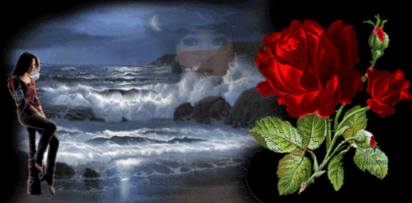

|  |
Elveda Eleni
Küçük kardeşi İsmail yerdeki mindere oturmuş ağlıyor, ablaları Saime ile Saadet divanda yan yana oturmuşlar sessizce konuşuyorlardı. Babası ise annesini mutfakta bir kenara çekmiş durmadan ona bir şeyler anlatıyor, annesi kâh ağlıyor kâh itiraz ediyor bitmek bilmeyen bu konu uzayıp gidiyordu. Babası az önce kahveden gelmiş, akşam radyodan dinledikleri haberlerin kahvede arkadaşları ile yaptıkları yorumlarını hararetli hararetli annesine anlatırken, akşam yemeğini hala yemediklerini unutmuş gibiydiler. Açlığa dayanamayan ablaları bu hararetli konuşmaların bitmeyeceğini anlayıp, sonunda kalkıp sofrayı hazırlamaya başlamışlar, o da yardım için mutfağa gitmişti. Anne ve babaları onların varlığından habersiz gibi konuşmalarına devam ediyorlardı. Mutfağa girip çıkarken hepsi bu hararetli konuşmanın ne olduğunu ve annelerinin sürekli neden ağladığını anlamaya çalışıyorlar bir yandan da arada duydukları kelimeleri kafalarında birleştirerek yorumlayıp bu bilmeceyi çözmeye çalışıyorlardı. Zekiye odaya her girip çıkışında küçük İsmail’in hala ağladığını görüyor, sebebini merak ediyordu. Sonunda artık bu kadar ağlamasına dayanamayıp onun yanına oturdu ve neden ağladığını ona hala söyleyip söylemeyeceğini sordu. Çektiği üzüntüye daha fazla dayanamayan kardeşi gözyaşlarına boğularak bir daha ne Mustafa’yı, ne Selo’yu ne de Niko’yu göremeyeceğim abla diyerek onun kucağına kapanmış isyan ediyordu. Duyduklarına şaşıran ablası o da neden diye sorduğunda, gidiyoruz abla bizi buradan alıp çok uzaklara götüreceklermiş diyerek bu haberi nasıl olurda bilmezsin dercesine ablasının gözlerinin içine bakmıştı merakla. Ondan bu gün sokakta Mustafa’dan duydukları bu haberin yalan olduğunu söylemesini ister gibi bir hali vardı. Zekiye o an kardeşinin ıstırabının nedenini anlamıştı. O da duymuştu bu konuşulanları, günlerdir herkes bu konudan bahsediyordu. Türkiye’ye göç edeceklerdi. Bu öyle sıradan bir göç değildi, isteğe bağlı değildi her şeyden önce. Zorunlu bir göçtü. Birkaç parça eşyadan başka bir şey götüremeyecekler, her şeylerini burada Girit’te bırakacaklardı. Yüzyıllardır vatan olarak bildikleri bu topraklarda tüm geçmişlerini, ölmüş dedelerini, ninelerini, umutlarını, gelecekle ilgili düşlerini, her şeylerini bırakıp gideceklerdi. Aslında götürmeye değer çok da fazla eşyaları yoktu. Fakir bir aile idiler, ayakkabı tamircisi olan babası evin geçimini zor sağlıyordu. Evlerinin çok büyük olmamasına, rahat ve lüks içinde yaşamamalarına rağmen, annesinin ağzından hiçbir zaman ne bir usanç ne de bir isyan sözü duymuşlardı. Onun bu her şeyi kabulleniş tarzı ve babalarına olan sevgisi evlerini sıcacık bir yuvaya döndürüyordu. Götürebilecekleri tek şey bu sıcaklık ve anıları idi. Ölüm korkusunu burada bırakıp gideceklerdi. Tek iyi yanı da buydu ya bu göçün. Geceleri silah sesleri duyulduğunda annesinin ağlayarak kardeşleri ve kendisini duvardaki dolabın içine korku ile sokup üstlerine yorganları, battaniyeleri nasıl örterek sakladığını hiç unutmayacaktı hayatının sonuna kadar. Silahlardan çıkan patlamaları ve “Sakın ses çıkarmayın, burada olduğunuz anlaşılmasın sakın” diye tembihlerini yüreklerinde götüreceklerdi yeni vatan topraklarına. Yüreği burkuldu bir daha. Sonunda sofra kurulmuş ablaları herkesi sofraya çağırıyordu. Zekiye küçük kardeşinin gözlerini silip, onu elinden tutarak sofraya yanına oturtmuştu. Gözleri ağlamaktan kızaran annesi bir yandan gözlerini silerek, bir yandan çocukları süzerek sofraya gelip oturmuş, ağlamamak için çaba sarf ediyordu. Babası ise küçük İsmail’in kafasını okşayarak onun diğer yanına oturmuş, ilk defa hayattan bıkmışçasına omuzları düşmüş, sofradaki çorba kâsesinin içine dalıp gitmişti. O akşam yenilen yemek tam bir matem yemeği gibiydi, kimse bir tek kelime etmemiş, kimse kafasını kaldırıp birbirinin yüzüne bakmamıştı. Herkes birbiriyle göz göze gelmekten korkuyordu sanki. Yemek aceleyle yenmiş sofra da aceleyle kaldırılmış, bulaşıkları yıldırım hızıyla yıkayan ablaları da odaya gelerek her zamanki yer minderlerinde yerlerini almışlardı. Anne ve babaları divanda oturmuş işlerin bitmesini herkesin odada toplanmasını bekliyordu. Yapılacak konuşmanın ne olduğunu hepsi az çok biliyordu, artık vakit gelmişti. Söze babaları başlamıştı. Kısaca lafı hiç uzatmadan Cuma günü Türkiye’ye gidiyoruz deyivermişti. Bunu söyleyiş biçimine kendisi bile şaşırmıştı, hepsi şaşkın şaşkın onun yüzüne bakıyor, annelerinin gözleri onların tepkisinin ne olacağını kaçırmamak için dikkat kesilmiş tek tek üzerlerinde gidip geliyordu. İlk isyan İsmail’den gelmişti. Ben arkadaşlarımdan ayrılmam, hiçbir yere gitmem diyerek Zekiye’nin kucağına kapanmıştı bile. Onun bu acıklı halini gören Zekiye ona sarılmış, saçlarını okşamaya başlamıştı. Ablaları günlerdir aralarında konuştukları bu konu sonunda açıkça konuşulmaya başladığı için rahatlamışlar, fakat üzüntülerinin ağlamaya dönüşmesine engel olamamışlardı. Çok uzaklarda başka bir ülkeye gitme fikri Zekiye’nin yüreğine bıçak gibi saplanmış, konuşamıyor, ağlayamıyordu bile. Bu güzelim evlerini nasıl bırakacaklardı, bahçede yetiştirdiği Begonya’ları, Ortanca’sını, Selluka’yı, Ful çiçeğini, odada camın kenarında duran o güzelim Camgüzeli’ni nasıl bırakır giderdi. Sokakta oynadığı arkadaşlarını, birlikte tığ işi öğrendiği, beraber çekirdek çitlediği, bahçedeki kayısı ağacına kurdukları salıncakta birlikte salladıkları, o çocukluğunun en güzel yanlarını nasıl bırakıp da gidecekti. Birden bahçede beslediği kuşlar geldi aklına, sonra tekir kedisini düşündü ve o da gözyaşı sellerine engel olamadı. Onların bu acıklı halini gören anne ve babası da ağlıyordu, hepsi bu ağlama törenine katılmış ağlıyor ağlıyorlardı. Ağlamaktan yorgun düşen küçük kardeşi Zekiye’nin kucağında çoktan uyuyup kalmıştı. Zekiye bırakıp gideceği şeyleri düşündükçe bu acıya dayanamıyor arka arkaya sorular soruyordu babasına. Çiçeklerini, tekir kedisini götürüp götüremeyeceğini, bir daha arkadaşlarını görmeye gelip gelemeyeceklerini soruyor, her sorusunun cevabı hayır olarak geliyordu. Neden gelemeyeceklerine, en çok sevdiği şeyleri neden götüremediklerine bir anlam veremiyordu. Ablaları da durmadan soruyor aldıkları her cevaptan sonra biraz daha bozguna uğruyorlardı. Annesi kızlarının çeyizlerini de götüremeyeceklerini anlayınca iyice çökmüştü. Artık ağlama faslı bitmiş, sorular ve bozgunlar faslı başlamıştı. Babasının verdiği cevap sürekli hayır, hayır dan başka bir şey değildi. Sorularının başka bir cevabının asla olmayacağını anlayan ablaları yatakları hazırlamışlardı. Hepsi o gece bilinmeyen bir yolculuğa çıkacaklarını düşünerek kafalarında cevabı olmayan yüzlerce soru ile uykunun sükûnetine bırakmışlardı kendilerini. Ertesi gün uyandıklarında annelerinin sanki on yaş yaşlandığını, babalarının omuzlarının çöktüğünü görmüşler, bu olayı kabul etmekten başka bir yolun olmadığını anlamış gibi soru sormamışlardı. Babaları kahvaltıdan sonra yolculukta gerekli belgeleri almak için arkadaşlarıyla buluşmak üzere doğru kahveye gitmişti. Mahallenin kadınları, genç kızları birer ikişer karşı komşuları Bahriye hanımın evinde toplanmışlar, çocuklar da bu önemli olayla ilgili akşam babalarından annelerinden duydukları haberleri birbirlerine bir an önce anlatmak için sokağa fırlamışlardı. Zekiye ise öncelikle Tekir’e sütlü mamasını hazırlayıp elinde tabakla bahçeye çıkmıştı. Tekir onu görünce koşup gelmiş yemeğini iştahla yemeye başlamıştı. Onun mamasını yiyişini seyrederken ondan ayrılmanın nasıl dayanılmaz olacağını düşünüyordu şimdi. Tekir’in yemek yemesi bitince onun kafasını kaşıyıp tatlı mırıltılarını bir süre dinledikten sonra, çiçeklerine su vermeye başlamıştı. Onları belki yanında götüremeyecekti ama bu eve gelecek olanların onlara iyi bakacağına inanmak istiyordu. Tekir’i ise en yakın arkadaşı Eleni’ye emanet edecekti. Bugün onunla bu konuyu konuşacaktı. En çok sevdiği çiçeği Selluka’yı sularken üzerindeki tomurcukları görünce gözleri yaşla doldu, yüreği burkularak ne yazık verdiğin bu tomurcuklar açtığı zaman, o güzelim parlak çiçeklerini göremeyeceğim diye geçirdi aklından. Tam o anda ablasının arkasında durup onu seyrettiğini fark etti. Ablası hadi artık üzülme, merak etme bu çiçeklerden Türkiye’de de varmış, orada da yetiştirirsin, hem gelenler iyi bakar çiçeklerine baksana güzelliklerine, kim kıyar bunlara dedi. Merakla nerden biliyorsun diye sormuştu Zekiye. Ablası da daha önce Türkiye’ye giden Nurten hanımın kocasına sordum dün o söyledi demişti. Sevinçten ne yapacağını bilemiyordu, demek orda da yetiştirebilecekti çiçek, kim bilir belki kedi bile edinirdi yine bir tane. Bu mutlulukla arkadaşı Eleni ile bir an önce konuşmak için koşup gitmişti sokağa. O gün dükkânını kimse açmamıştı, artık neye yarardı ki… Akşam yemeğinde yarın diyordu babası, sabah erkenden gidiyoruz, Kuşadası’na, limana gemiler sabaha karşı gelecekmiş, saat 7.00 de limanda olacağız, kimlikler bende, herkesle vedalaştınız mı? Arkadaşlarınızla herkesle helalleştiniz mi? Evet diyorlardı hepsi bir ağızdan, evet helalleştik, evet vedalaştık. Küçük kardeşi neşeyle, baba biliyor musun?, Mustafa’lar la Selo’lar da bizimle geliyor, bütün arkadaşlarım geliyor Türkiye’ye, hepimiz birlikte gidiyoruz İzmir’e. Bu gece ağlamıyordu, mutlulukla iştahla yiyordu yemeğini. Keşke Niko’lar da gelebilseydi diyordu yine de arkasından. Niko bana bütün meşelerini verdi, ben de ona telden yaptığım arabayı verdim diyordu, durmadan anlatıyordu sokakta yaptıklarını. Herkes yüzünde acı dolu bir tebessümle dinliyordu İsmail’in anlattıklarını. Anneleri ertesi sabah henüz gün ağarmadan usulca kalkmış kahvaltıyı hazırlamış ve o sevecen yumuşak sesiyle uyandırmıştı hepsini. Acele ile giyinmişler yüzlerini yıkayıp sofraya oturmuşlardı hep birlikte. Kimse birbiriyle konuşmadan kahvaltı faslı bitmişti. Ablaları her zamanki gibi sofrayı toplamış bulaşıkları yıkamaya koyulmuşlar, anneleri de yatakları toplamıştı, evi derli toplu ve temiz bir şekilde bırakmak istiyorlardı. Zekiye küçük İsmail’in saçlarını tarayıp hazırlamıştı. Az sonra tüm komşular teker teker evlerinden çıkmaya başlamışlardı. Çıkanlar birbirlerini sokakta bekliyorlardı. Sonunda tamam olduklarına kanaat getirince hep birlikte limana doğru yürümeye başlamışlardı. Hüzün dolu bir ayrılığa giden bu konvoya adada kalıp daha sonra bu zoraki göçe katılacak olan komşular, arkadaşlar ve akrabalar eşlik ediyorlardı. İçlerinde dostluk kurdukları az da olsa birkaç Rum aile, gözü yaşlı yine görüşeceğiz, biz buradayız en kısa zamanda gelirsiniz, siz gelemezseniz biz gelir sizi buluruz diye teselli sözcükleriyle bu yürüyüşün acısını dindirmeye çabalıyorlardı. Oysa bunun imkânsızlığını onlar da çok iyi biliyordu. Her şeylerini bu adada bırakıp gidenler bir daha asla gelemeyeceklerdi. Limana vardıklarında büyük gemilerin ağırlığı altında adeta ezilen insanlar, bu acıya daha fazla dayanamıyor, ağlayarak sevdikleri bunca yıllarını birlikte geçirdikleri dostlarıyla tekrar tekrar kucaklaşıyorlardı. Liman ana baba günüydü sanki güneş bile yüzünü göstermek istememişti o gün. Kapalı, bulutlu, ağır bir havanın hâkim olduğu o anda, ayrılığın acısını arttırmak için bir de rüzgâr çıkmış, ortalık toz duman olmuştu. Gemiden çıkan görevliler ellerindeki listeden teker teker isimlerini bağırıp aileleri çağırıyor, kimlikleri kontrol edilen aileler gemilere biniyorlardı. Çoğu sadece yanlarına birer valiz eşya alabilmişti. Valizlerine koyamadıklarını yüreklerinde, gönüllerinde götürüyorlardı. Gemiye bindiklerinde herkesin yaptığı gibi güvertede almışlardı soluğu, son bir kez daha limanda dostlarına el sallamak için, yıllar yılı kendilerine vatan edindikleri bu cennet adayı son kez görmek için çırpınıp duruyorlardı herkes gibi. İşte oradaydı Eleni, annesinin elinden tutmuş, onu daha iyi görebilmek için parmak uçlarının üzerinde yukarı doğru kafasını uzatıyor, bir eliyle de el sallıyordu. Eleni birbirlerine tam sarıldıkları anda elinde evlerinden çıktığından beri tuttuğu kâğıda sarılmış küçük paketi Zekiye’nin ellerinin arasına dikkatlice tutuşturmuş, gözlerinin içine bakarken, orada yoktur belki ona bakarken beni hatırla demişti. O telaşla ne olduğuna bile bakmaya fırsat bulamayan Zekiye onu son bir kez sarılıp öpmüş ve arkasına bakmadan gemiye doğru ağlayarak koşup uzaklaşmıştı. Güvertede gözleri Eleni’ye takılıp kalmış, o karmaşa, o uğultu içinde hiçbir şey düşünemiyor, gözleri yaşlarla dolu sadece Eleni’ye el sallıyordu sürekli. Sonunda o kulakları parçalayan ses duyulduğunda demir almaya başlayan gemiden yükselen hıçkırıklarla limandan gelen hıçkırıklar birbirine karışmıştı. Elveda çiçekler, kuşlar, elveda Tekir, elveda Girit, elveda Eleni diyordu içinden Zekiye, son kez elveda diyordu yaşadıklarına, korkularına. Ağır ağır uzaklaşan geminin ardından eller sallanıyor, dostlar bilinmeyen yeni hayatlarına uğurlanıyordu. Adanın gittikçe gözden kaybolan siluetine bakarken elindeki paketi açmıştı Zekiye, küçücük bir saksı içinde özenle dikilmiş Selluka çiçeğinin minik fidesini tanımıştı, içini bir sıcaklık kapladı. Ona çok iyi bakacağına söz verdi içinden Eleni’ye, nereye giderse gitsin onu yanından hiç ayırmayacaktı. O günden sonra hayatının sonuna kadar evinde her zaman özenle suladığı bir Selluka çiçeği mutlaka olacaktı.
Samile İLTER İzmiR 24.11.2006 ileri... |